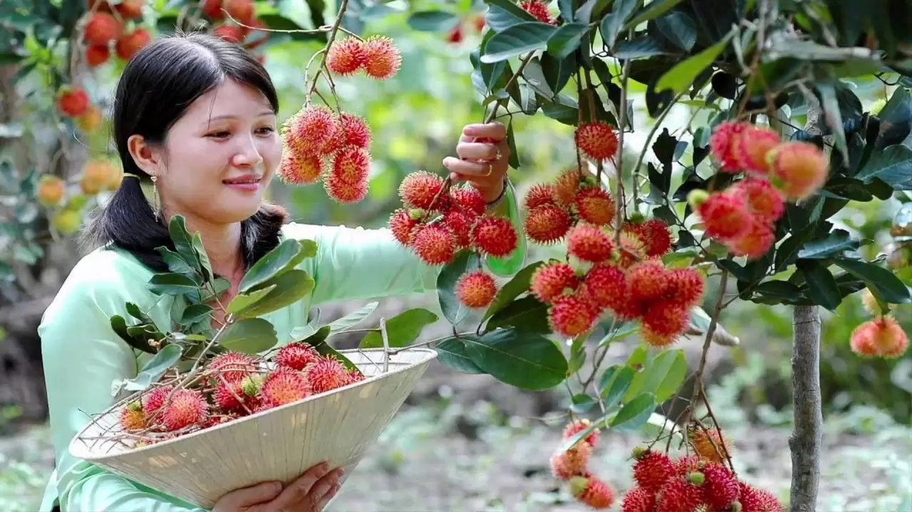

Fruit Agriculture



fruit farming, growing of fruit crops, including nuts, primarily for use as human food. Cultivation of fruit crops is mainly confined either to home garden level or to non-commercial cultivations where a mixture of fruit trees are cultivated in small land holdings. However a few crops such as pineapple, banana and rambutan are being grown on medium scale commercial cultivation.
Most profitable fruits in India
To find more information regarding fruit agriculture:
click here